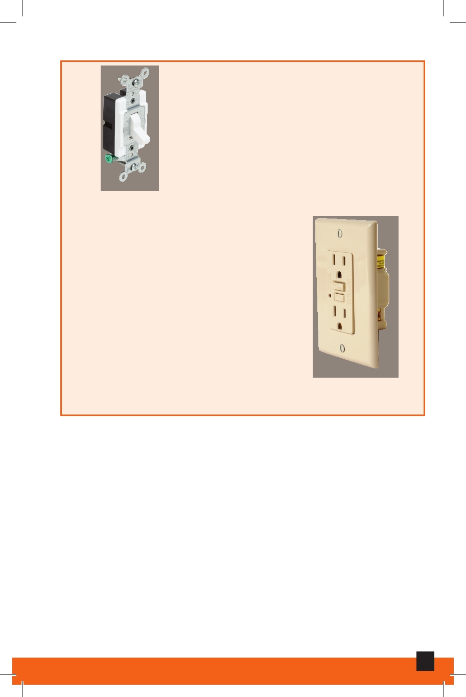

Electrical Switch
A device designed to break the
flow of electric current.
Electrical Switch
Ground Fault Circuit
Interrupter (GFCI)
Receptacle
GFCI receptacles continuously
monitor the current used by
appliances and automatically stop
the flow of electricity in case of a
problem. They are required for use
in kitchens and bathrooms within
three feet of a plumbing fixture.
Ground Fault Circuit Interrupter
(GFCI) Receptacle
Grounding
A key safety feature, designed to conduct electricity to the
ground where it becomes harmless. A grounding wire (a
bare copper wire or an insulated green wire) provides an
additional return path for electrical current.
13
Electrical Maintenance and Repair